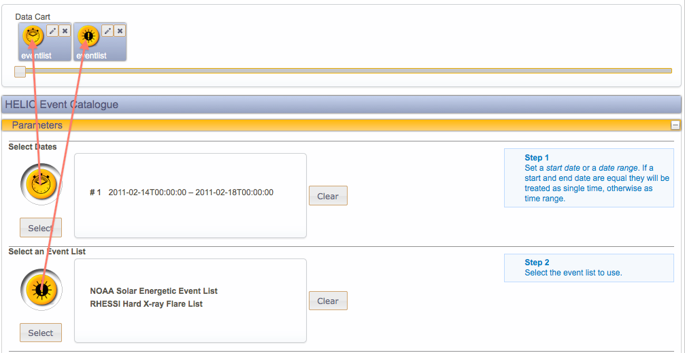
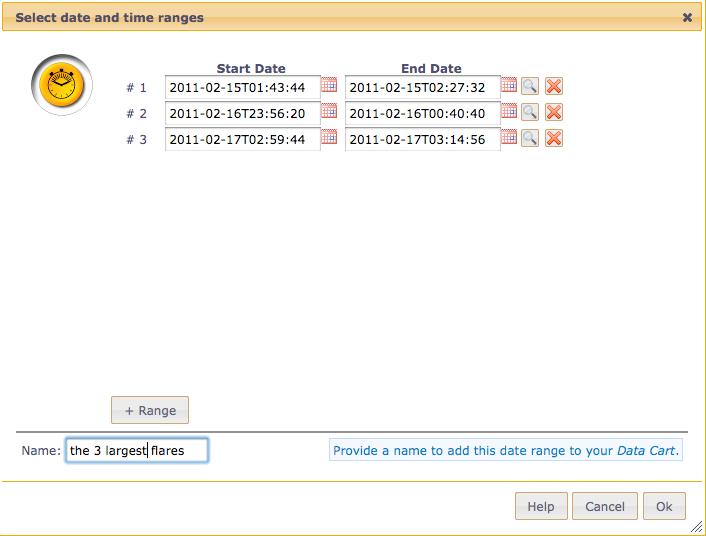
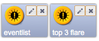
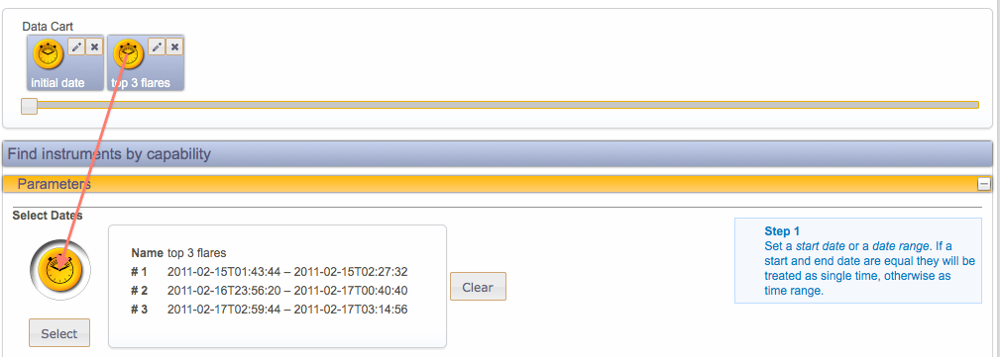

The main purpose of the data cart is to connect multiple tasks together. In this tutorial we explain how data can be added to the data cart, how it can
be managed and finally how it is connected it to other services. The screenshots in this tutorial base on the results of the previous tutorial.
- Drag & drop from input area. After entering your data you can drag the yellow circle from the summary box and drop it on the data cart.

Figure 12: Drag the yellow circle and drop it on the data cart
- Inspect a row of your result table. Click on the magnifying glass to open the date inspector. Clicking the “Ok”-button will popup a dialog and ask if
the date values should be stored to the data cart.
- The third option is to select on or several rows in a result table and click on the extract icon (). This will popup the data extraction dialog.
Clicking ok will add the selected dates to the data cart.

Figure 13: Data extraction dialog. The input box at the bottom allows specifying a name for the data cart item.
- Click on the pencil icon to modify the data cart item. This is mainly useful to rename the item.
- Click on the cross to remove a data cart item from the data cart.

Figure 14: Two sample items in the data cart, once with the default label ("eventlist") and once with a custom label
- Select the task you are interested in, e.g. click menu “Search” - “Instruments by Capability”
- Drop the previously stored time range to the grey circle. Clicking on the yellow circle, the select button or the box will allow you to edit the data
without affecting the corresponding item in the data cart.

Figure 15 Drag item from data cart to the grey circle in the parameter section. Possible target locations will be highlighted when the item is dragged.